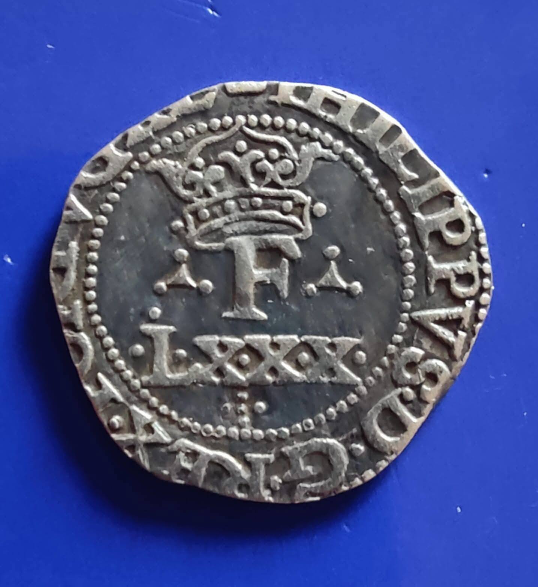
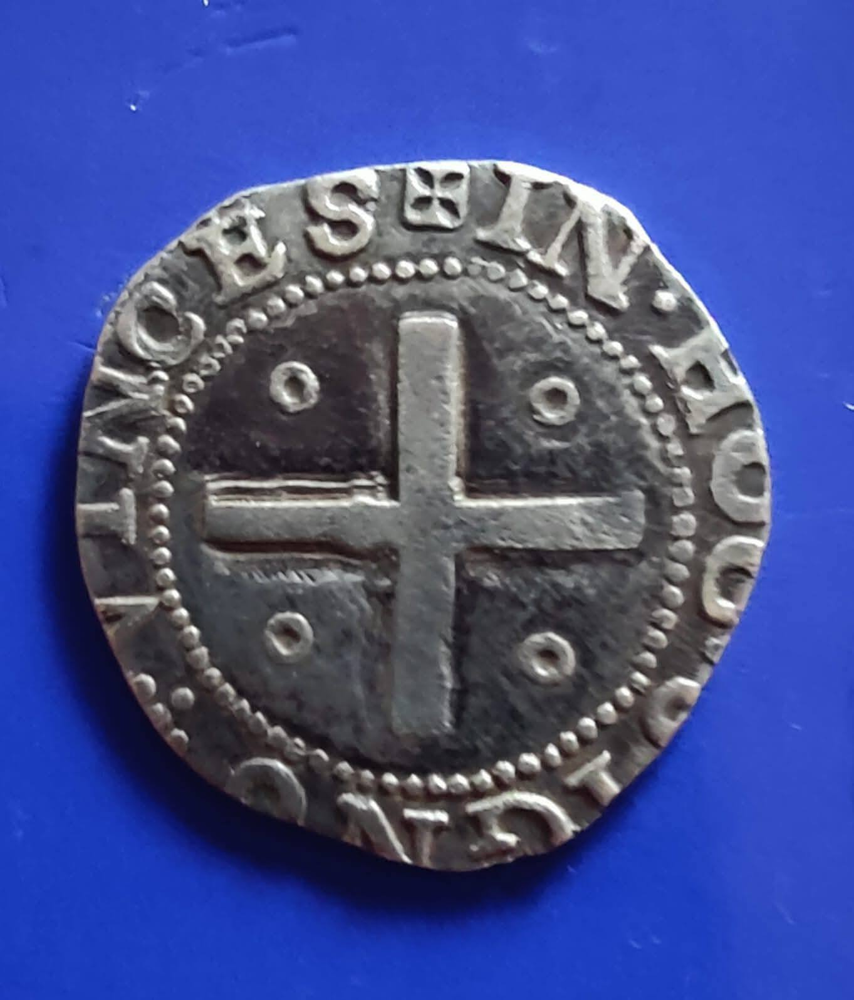

Esta moeda foi posta recentemente à venda, sob o epíteto de linda, bela, rara e quejandos. É daquelas peças em que não é sequer preciso comparar as letras para perceber que foi toda mexida. O campo está cheio de altos e baixos, perfeitamente incompatíveis com um processo de cunhagem manual. Esta peça é só um exemplo, de entre muitos que têm sido postos no mercado e feito as delicias dos nossos colecionadores. Têm o que merecem. No fundo, o negócio goleia sempre a cultura. São as invasões bárbaras, no seu retrato mais que perfeito.